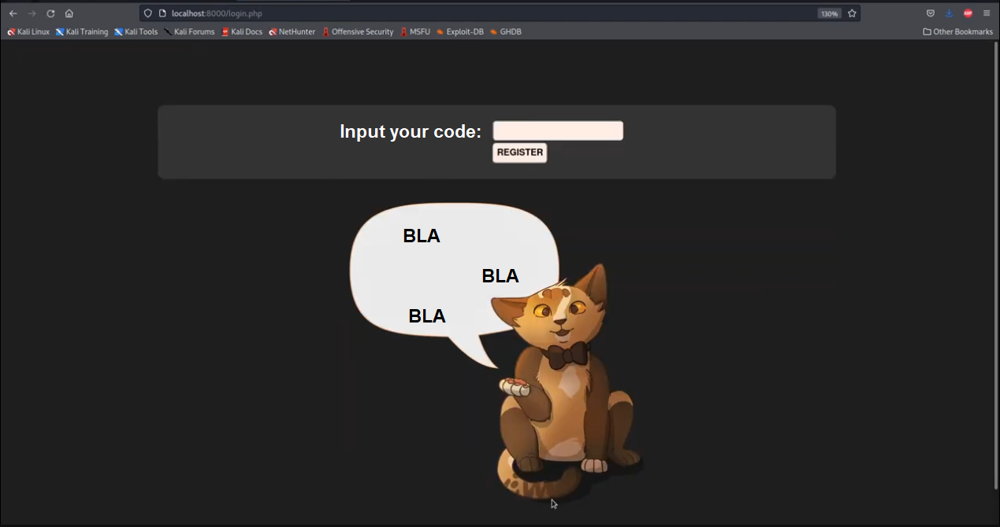
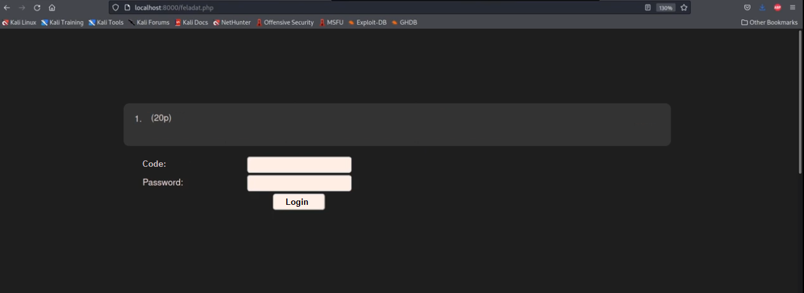
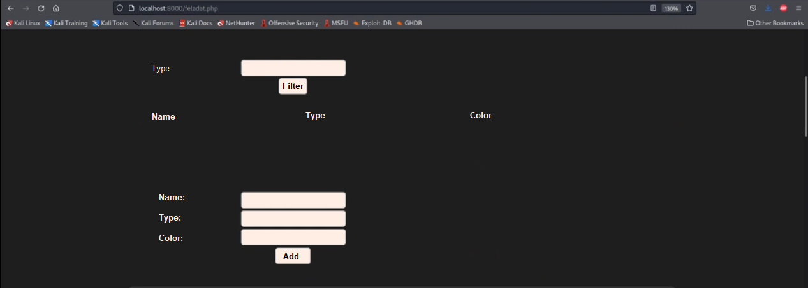
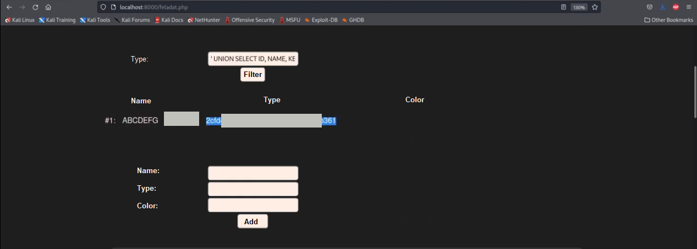

Exercise
In the exercise we receive the goal of the exercise which is to get the password of the student who has the code ABCDEFG and that the database in which the password is stored is a SQLite database.
We learn that the password is four characters long and only contains digits, but we cannot brute force it or guess it as the website logs pretty much everything.
We also receive a command which allows us to access a docker.
We see an example input:
' UNION SELECT sql FROM sqlite_master;#
After getting access to the docker, we are given a webpage that looks like this:

Solution
We register with the student code and we see this:

After trying a random password with the ABCDEFG code we fail.
We know that we are dealing with SQLite so let's try ABCDEFG';#and the same password we entered before. We can also intercept our request with Burp Suite for further analysis but it's not necessary here.
It seems like the website is vulnerable to SQL injection because we could log in.

If we provide the ABCDEG code as the input, we see a normal output, but if we provide the
' UNION SELECT null, null, null, null;#
SQL instruction as the input, we get nothing back. If we provide the
' UNION SELECT sql, null, null, null FROM sqlite_master;#
SQL instruction as the input we get back the
CREATE TABLE statements of the database:
#1:#2: CREATE TABLE animals (name TEXT, type TEXT, color TEXT)#3: CREATE TABLE datauserbb (id TEXT PRIMARY KEY, name TEXT, key TEXT)#4: CREATE TABLE users (id TEXT PRIMARY KEY, name TEXT, passphrase TEXT, pwd TEXT)
We learn that the contents of the users table does not contain the password for the user, but the datauserbb table looks interesting too.
If we query the contents of the table with the
' UNION SELECT id, name, key, null FROM datauserbb;#
we get the code, the name, and the hash of the password:

Cracking the hash we get the password and can log in with the credentials.
Done.
~Thank you for reading~
Useful references